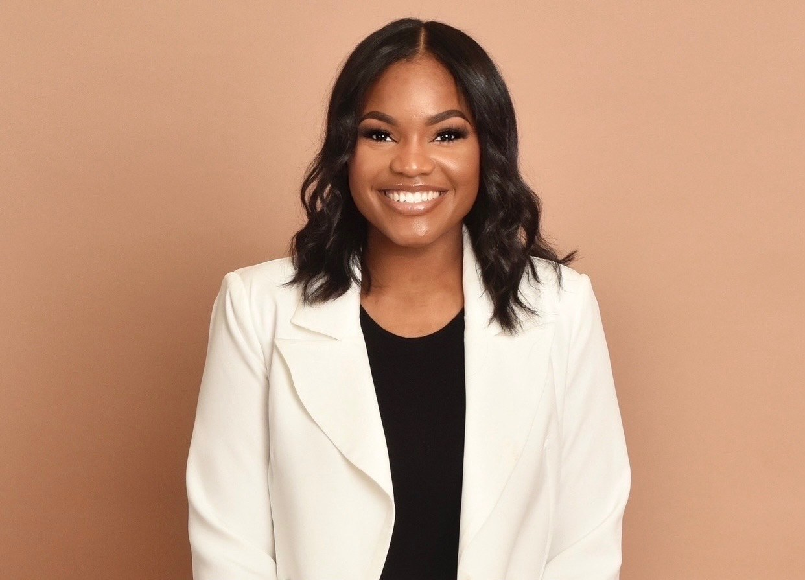

About
Meet Allana
I’m a Licensed Professional Counselor and founder of The Hooks Collective. Much of what I believe about this work has been shaped by the people I’ve had the privilege of serving.
My experience has taken me across schools, juvenile justice, and community settings. While much of my professional work has centered on adolescents and young adults, I’ve also worked alongside families, educators, professionals, and community members. Through it all, I’ve seen the difference it can make when people have spaces where they feel seen, heard, and understood.
My work is rooted in a trauma-informed lens because I believe there’s always more to a person than what we see on the surface. Our experiences matter, but so do our culture, relationships, environment, strengths, and the communities that shape us. For me, being trauma-informed isn’t about defining someone by what they’ve been through; it’s about making room for the whole person and all that they can become.
While some of this work begins with difficult stories, I don’t believe that’s where it has to end. That’s what The Hooks Collective represents to me: the opportunity to honor the stories people carry while creating space for the ones still being written.
— AllanaOur Story
I named The Hooks Collective in honor of my great-great-grandfather, Joseph Hooks, whose experience with mental illness became part of our family’s story.
He lived during a time when conversations about mental health — particularly within Black families and communities — were often met with silence, stigma, and limited understanding. Generations later, I have the opportunity to help create something different.
The Hooks Collective honors his legacy by making room for conversations that haven’t always had a place.
For me, carrying the Hooks name is both an honor and a responsibility.
